콘크리트산업기사 (2015-03-08 기출문제)
1과목: 콘크리트재료 및 배합
1. 잔골재의 함수상태를 계량한 값이 다음과 같을 때 흡수율을 구하면?
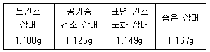
- 4.40%
- 4.45%
- 4.50%
- 4.55%
(정답률: 81%)

2. 골재에 포함되어 있는 유해물질에 대한 설명으로 옳은 것은?
- 후민산이나 탄닌산은 주로 바닷모래에 많이 포함되어 있으며 수화반응을 방해한다.
- 이분이 많이 포함되어 있는 골재를 사용하면 타설 후 강도저하가 발생한다.
- 골재에 포함된 염분은 수화반응을 지연시키며 철근을 부식시킨다.
- 골재에 포함된 조개껍질을 콘크리트의 유동성을 저하시키지만 강도에는 큰 영향을 주지 않는다.
(정답률: 31%)
3. 시멘트의 응결시간시험 방법으로 옳은 것은?
- 오토클레이브 시험
- 비비시험
- 블레인시험
- 길모어 침에 의한 시험
(정답률: 78%)
4. 시험실에서 콘크리트 시방배합 설계 시 잔골재 및 굵은 골재의 함수 상태로 적합한 것은?
- 표면건조포화상태
- 공기중건조상태
- 절대건조상태
- 습윤상태
(정답률: 76%)
5. 콘크리트의 배합강도를 결정할 때 사용하는 압축강도의 표준편차는 30회 이상의 시험실적으로부터 구하는 것을 원칙으로 하며, 그 이하일 경우 보정계수를 곱하여 그 값을 표준편차로 사용한다. 다음 중 시험횟수 20회일 때 표준편차의 보정계수로 옳은 것은?
- 1.24
- 1.16
- 1.08
- 1.03
(정답률: 78%)
6. 강도 및 내구성을 고려하여 물-결합재비를 결정할 때, 고려해야 할 사항으로 옳지 않은 것은?
- 콘크리트의 압축강도를 기준으로 해서 물-결합재비를 결정할 경우, 공시체의 재령은 28일을 표준으로 한다.
- 제빙화학제가 사용되는 콘크리트의 물-결합재비는 45% 이하로 한다.
- 콘크리트의 수밀성을 기준으로 물-결합재비를 결정할 경우, 그 값은 50% 이하로 한다.
- 콘크리트의 탄산화 저항성을 고려하여 물-결합재비를 결정할 경우, 그 값은 50% 이하로 한다.
(정답률: 78%)
7. 잔골재를 여러 종류의 체로 체가름하였더니 각 체에 남는 누계량의 질량백분율이 아래의 표와 같이 나타났다. 이 잔골재의 조립율(F.M.)은?
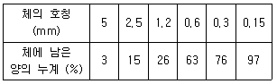
- 2.27
- 2.45
- 2.73
- 2.80
(정답률: 72%)
8. 콘크리트 배합설계에 대한 일반적인 설명으로 옳은 것은?
- 콘크리트의 수밀성을 기준으로 물-결합재비를 정할 경우 그 값은 45% 이하로 한다.
- 일반적인 구조물에서 굵은 골재의 최대치수는 40mm 이하로 한다.
- 잔골재율이 작으면 소요 워커빌리티를 얻기 위한 단위수량이 감소된다.
- 콘크리트 품질변동은 공기량의 증감과는 관련이 없다.
(정답률: 53%)
9. 압축강도의 시험 기록이 없고 설계기준압축강도가 21MPa인 경우 배합강도는?
- 28MPa
- 29.5MPa
- 31MPa
- 33.5MPa
(정답률: 70%)
10. 순간적인 응결과 경화가 요구되는 숏크리트 공법 및 그라우트에 의한 지수공법에 사용되는 혼화제는?
- 촉진제
- 팽창제
- 급결제
- 감수제
(정답률: 90%)
11. KS L 5110에 의하여 시멘트 비중시험을 실시한 결과, 르샤틀리에 비중병에 광유를 주입하고 측정한 눈금이 0.6mL였다. 이 비중병에 시멘트 64g을 넣고 광유가 올라온 눈금을 측정한 결과 21.25mL를 얻었다. 시멘트의 비중은 얼마인가?
- 3.⑤
- 3.10
- 3.15
- 3.20
(정답률: 77%)
12. 콘크리트 배합수에 대한 일반적인 설명으로 틀린 것은?
- 지하수에 의한 염소이온의 허용한도는 5,000ppm이다.
- 해수에 존재하는 이온 중 가장 많은 것은 Cl-이다.
- 콘크리트 운반차 및 믹서를 청소한 물은 pH가 12정도의 높은 알칼리성이다.
- 철근콘크리트에 해수를 배합수로 사용할 수 없다.
(정답률: 78%)
13. 화학 혼화제의 품질시험 항목으로 옳지 않은 것은?
- 블리딩양의 비
- 길이 변환비
- 동결융해에 대한 저항성
- 휨강도 비라.
(정답률: 75%)
14. 로스앤젤레스 시험기에 의한 굵은 골재의 마모시험 결과가 아래 표와 같을 때 마모감량은?
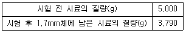
- 18.5%
- 24.2%
- 27.3%
- 31.9%
(정답률: 80%)
15. 다음 중 일반적인 콘크리트 시방배합표에 표시되지 않는 사항은?
- 슬럼프의 범위
- 물-결합재비
- 잔골재율
- 골재의 조립률
(정답률: 64%)
16. 다음 중 일반 콘크리트용 잔골재로서 적합하지 않은 것은?
- 절대건조 밀도가 2.45g/cm3인 잔골재
- 흡수율이 1.2%인 골재
- 염화율(NaCl 환산량) 함유량이 0.02%인 골재
- 안정성시험 결과 손실질량이 8%인 골재
(정답률: 43%)
17. 콘크리트의 배합에 대한 일반사항을 설명한 것으로 틀린 것은?
- 현장 콘크리트의 품질변동을 고려하여 콘크리트의 배합 강도는 설계기준강도보다 적게 정한다.
- 잔골재율은 소요의 워커빌리티를 얻을 수 있는 범위 내에서 단위수량이 최소가 되도록 시험에 의해 정한다.
- 단위수량은 작업에 적합한 워커빌리티를 갖는 범위 내에서 될 수 있는 대로 적게 한다.
- 물-결합재비는 소요의 강도, 내구성, 수밀성 및 균열저항성 등을 고려하여 정한다.
(정답률: 75%)
18. 질량법에 의해 잔골재의 표면수를 측정할 경우, 시료에서 치환된 물의 질량(m)을 구하는 식으로 옳은 것은? (단, m1 : 시료의 질량(g), m2 : 용기와 물의 질량(g), m3 : 용기, 시료 및 물의 질량(g))
- m=m1+m2+m3
- m=m1-m2+m3
- m=m1+m2-m3
- m=m1-m2-m3
(정답률: 77%)
19. 시멘트의 강도시험(KS L ISO 679)에 대한 설명으로 틀린 것은?
- 모래로 인한 편차를 줄이기 위해 표준사를 사용하도록 규정한다.
- 공시체는 질량으로 시멘트1에 대해서 물/시멘트 비 0.5 및 잔골재 3의 비율로 모르타르를 형성한다.
- 시험체는 치수 40mm×40mm×160 mm인 각주형 공시체를 사용한다.
- 시멘트 모르타르의 압축 강도 및 인장 강도 시험 방법에 대하여 규정한다.
(정답률: 43%)
20. 시멘트 1g당 발생되는 수화열은 어느 정도인가? (단, 시멘트가 물과 완전히 반응할 경우)
- 85cal/g
- 125cal/g
- 185cal/g
- 225cal/g
(정답률: 70%)
2과목: 콘크리트제조, 시험 및 품질관리
21. 동결융해 저항성을 알아보기 위한 급속동결융해에 따른 콘크리트의 저항시험방법에 대한 설명으로 틀린 것은?
- 동결융해 1사이클의 소요시간은 4시간 이상, 8시간 이하로 한다.
- 동결융해 1사이클은 공시체 중심부의 온도를 원칙으로 하며, 원칙적으로 4℃에서 -18℃로 떨어지고, 다음에 –18℃에서 4℃로 상승되는 것으로 한다.
- 시험의 종료는 300사이클로 하며, 그때까지 상대 동탄성 계수가 60% 이하가 되는 사이클이 있으면 그 사이클에서 시험을 종료한다.
- 특별히 다른 재령으로 규정되어 있지 않는 한 공시체는 14일간 양생한 후 동결융해 시험을 시작한다.
(정답률: 55%)
22. 콘크리트의 비비기에 대한 설명으로 틀린 것은?
- 가경식 믹서를 사용하고 비비기 시간에 대한 시험을 실시하지 않은 경우 그 최소 시간은 1분 30초 이상을 표준으로 한다.
- 재료를 믹서에 투입하는 순서로서 물은 다른 재료의 투입이 끝난 후 주입하는 것을 원칙으로 한다.
- 비비기는 미리 정해둔 비비기 시간의 3배 이상 계속하지 않아야 한다.
- 믹서 안의 콘크리트를 전부 꺼낸 후가 아니면 믹서 안에 다른 재료를 넣지 않아야 한다.
(정답률: 82%)
23. 레디믹스트 콘크리트의 발주에 있어 구입자가 생산자와 협의하여 지정할 수 있는 사항이 아닌 것은?
- 시멘트의 종류
- 골재의 종류
- 굵은골재의 최대 치수
- 단위수량의 하한치
(정답률: 76%)
24. 다음 중 레디믹스트 콘크리트의 종류가 아닌 것은?
- 보통 콘크리트
- 중량골재 콘크리트
- 포장 콘크리트
- 고강도 콘크리트
(정답률: 70%)
25. 콘크리트의 공시체가 압축 혹은 인장을 받을 때, 공시체 축의 직각 방향(횡방향)의 변형률을 축 방향 변형률로 나눈 값을 무엇이라고 하는가?
- 탄성계수
- 포아송 수
- 포아송 비
- 크리프 계수
(정답률: 72%)
26. 블리딩에 대한 설명 중 틀린 것은?
- 블리딩이 많은 콘크리트는 침하량도 많다.
- 블리딩은 굵은 골재와 모르타르, 철근과 콘크리트의 부착력을 저하시킨다.
- 블리딩은 일종의 재료분리이므로 블리딩이 크면 상부의 콘크리트가 다공질이 된다.
- 블리딩이 많으면, 모르타르 부분의 물-시멘트비가 작게 되어 강도가 크게 된다.
(정답률: 74%)
27. 콘크리트의 탄산화 측정에 사용되는 페놀프탈레인용액의 농도는?
- 1%
- 2%
- 3%
- 4%
(정답률: 90%)
28. AE콘크리트에 관한 다음 사항 중 옳지 않은 것은?
- AE 공기량은 온도가 높을수록 감소한다.
- 단위 잔골재량이 많을수록 공기량은 감소한다.
- AE제를 적절하게 사용하면 콘크리트의 동결융해 저항성이 향상된다.
- 공기량 1% 증가에 대하여 압축강도라. 가 소정의 비율로 감소한다.
(정답률: 60%)
29. 150mm×150mm×530mm인 직사각형보 시험체에 3등분점 재하를 하여 휨강도 실험을 하였다. 실험 시 지간을 450mm로 하였으며, 최대하중이 112.5kN에서 파괴되었다. 이 콘크리트의 휨강도는?
- 15.0MPa
- 16.7MPa
- 22.5MPa
- 33.8MPa
(정답률: 82%)
30. 콘크리트 타설 후 응결 및 경화과정에서 나타나는 초기 소성 수축 균열에 대한 설명으로 옳은 것은?
- 콘크리트 표면의 물의 증발속도가 블리딩 속도보다 빠른 경우 발생되는 균열이다.
- 콘크리트 표면 가까이에 있는 철근, 매설물 또는 입자가 큰 골재 등이 침하를 방해하기 때문에 나타난다.
- 균열이 발생하여 커지는 정도는 블리딩이 큰 콘크리트일수록 높아진다.
- 콘크리트 작업시 시공이음부의 레이턴스를 제거하지 않았을 때 나타난다.
(정답률: 68%)
31. 플랜트에 고정믹서가 설치되어 있어 각 재료를 계량하고 혼합하여 완전히 비벼진 콘크리트를 트럭 믹서 또는 트럭 애지테이터에 투입하여 운반 중에 교반하면서 지정된 공사 현장까지 배달, 공급하는 레디믹스트 콘크리트는?
- 쉬링크 믹스트 콘크리트
- 트랜싯 믹스트 콘크리트
- 센트럴 믹스트 콘크리트
- 프리 믹스트 콘크리트
(정답률: 60%)
32. 콘크리트의 알칼리 골재반응에 대한 설명으로 옳은 것은?
- 고로슬래그나 플라이애시 시멘트와 같은 혼합시멘트를 사용하면 알칼리 골재반응의 억제에 효과가 있다.
- 골재를 세척하여 사용하면 알칼리 골재반응을 현저히 억제할 수 있다.
- 알칼리 골재반응을 억제하기 위해서는 나트륨이나 칼륨 이온의 함량이 높은 시멘트를 사용하는 것이 좋다.
- 화강암 계열의 골재를 골재원으로 쓰는 경우 알칼리 골재반응이 진행될 가능성이 매우 높다.
(정답률: 40%)
33. 다음 중 된비빔 콘크리트용 시험이 아닌 것은?
- 비비시험가.
- 다짐계수시험
- L플로시험
- 진동대식 컨시스턴시시험
(정답률: 64%)
34. 콘크리트 재료 계량시 혼화제의 허용오차로 옳은 것은?
- ±1%
- ±2%
- ±3%
- ±4%
(정답률: 81%)
35. 품질관리의 진행순서로 옳은 것은?
- 계획→검토→실시→조치
- 계획→실시→검토→조치
- 계획→실시→조치→검토
- 계획→검토→조치→실시
(정답률: 78%)
36. 품질관리를 위하여 사용하는 관리도 중 아래의 표에서 설명하는 것은?
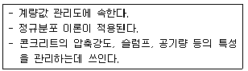
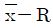
관리도- p 관리도
- Pn 관리도
- c 관리도
(정답률: 94%)
37. 레디믹스트 콘크리트의 품질에 대한 항목 중 슬럼프 플로가 600mm인 경우 슬럼프 플로의 허용 오차로서 옳은 것은?
- ±25mm
- ±50mm
- ±75mm
- ±100mm
(정답률: 79%)
38. 품질관리의 7가지 도구 중 아래의 표에서 설명하는 것은?
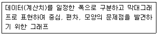
- 파레토도
- 히스토그램
- 층별
- 산포도
(정답률: 80%)
39. 콘크리트 압축강도 시험용 공시체의 제작에 관한 설명으로 틀린 것은?
- 공시체는 지름의 2배의 높이를 가진 원기둥형으로 하며, 그 지름은 굵은 골재의 최대 치수의 3배 이상, 100mm 이상으로 한다.
- 공시체를 제작할 때 콘크리트는 몰드에 2층 이상으로 거의 동일한 두께로 나눠서 채우며, 각 층의 두께는 160mm를 초과해서는 안 된다.
- 공시체의 캐핑을 하는 경우 캐핑층의 압축강도는 콘크리트의 예상되는 강도보다 작아야 하며, 캐핑층의 두께는 공시체 지름의 5%를 넘어서는 안 된다.
- 다짐봉을 사용하여 콘크리트 다지기를 할 경우, 각 층은 적어도 1,000m2 에 1회의 비율로 다지도록 하고 바로 아래 층까지 다짐봉이 닿도록 한다.
(정답률: 49%)
40. ø100mm×200mm인 콘크리트 표준공시체에 대하여 할렬인장강도 시험 결과, 하중 62.8kN에서 파괴되었다. 이 공시체의 인장강도는?
- 0.1MPa
- 0.2MPa
- 1.0MPa
- 2.0MPa
(정답률: 80%)
3과목: 콘크리트의 시공
41. 아래의 표에서 설명하는 콘크리트의 이음은?
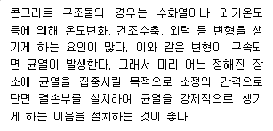
- 균열유발이음
- 수평시공이음
- 연직시공이음
- 신축이음
(정답률: 73%)
42. 해양콘크리트 구조물에서 동결융해 작용을 받을 염려가 없는 경우, 사용하는 AE 콘크리트의 공기량의 표쥰은 몇%인가?
- 4%
- 4.5%
- 5%
- 5.5%
(정답률: 50%)
43. 매스콘크리트의 수화열 저감을 위하여 사용되는 시멘트가 아닌 것은?
- 중용열포틀랜드시멘트
- 고로슬래그시멘트
- 플라이애시시멘트
- 알루미나시멘트
(정답률: 68%)
44. 서중콘크리트에 대한 설명 중 틀린 것은?
- 콘크리트를 타설할 때 콘크리트의 온도가 25°C를 초과하는 것이 예상되는 경우에는 서중콘크리트로서 시공하여야 한다.
- 펌프로 수송할 경우에는 수송관을 젖은 천으로 덮는 것이 좋다.
- 양생할 때 목재거푸집의 경우처럼 거푸집판에 따라서 건조가 일어날 염려가 있는 경우에는 거푸집까지 습윤상태로 유지하여야 한다.
- 콘크리트를 타설할 때 콘크리트의 온도는 35°C 이하이어야 한다.
(정답률: 57%)
45. 수중불분리성 콘크리트의 타설에 대한 설명으로 틀린 것은?
- 유속이 50mm/s 정도 이하의 정수 중에서 타설하여야 한다.
- 수중 낙하높이는 0.5m 이하이어야 한다.
- 수중 유동거리는 10m 이하로 하여야 한다.
- 콘크리트 펌프로 압송할 경우, 압송압력은 보통콘크리트의 2~3배로 하여야 한다.
(정답률: 52%)
46. 바닥틀의 시공이음에 대한 아래 표의 설명에서 ( )안에 알맞은 수치는?
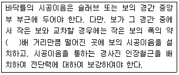
- 1
- 2
- 3
- 4
(정답률: 57%)
47. 숏크리트에서 리바운드율을 저감하기 위한 대책이다. 옳지 않은 것은?
- 분사 부착면을 거칠게 한다.
- 건식공법을 사용한다.
- 숙력된 노즐맨(nozzle man)이 작업토록 한다.
- 뿜는 압력을 일정하게 한다.
(정답률: 71%)
48. 콘크리트 공장제품의 재료에 대한 설명으로 틀린 것은?
- 프리스트레스트 콘크리트 공장 제품의 경우 순환골재를 사용할 수 없다.
- 일반적으로 혼화제를 사용하지 않는다.
- 진골재의 경우 크고 작은 입자가 적절히 혼합되어 있는 것을 쓰는 것이 좋다.
- 철근으로 사용할 강재는 KS규격에 적합한 것을 사용한다.
(정답률: 71%)
49. 콘크리트가 굳지 않은 상태일 때 콘크리트 표면의 수분 증발속도가 블리딩(bleeding) 수의 상승속도를 상화하는 경우에 표면 부근에 급격하게 건조되면서 발생하는 균열을 무엇이라고 하는가?
- 건조수축균열
- 수화수축균열
- 소성수축균열
- 자기수축균열
(정답률: 84%)
50. 한중콘크리트로 시공해야 하는 기준이 되는 가상조건에 대한 설명으로 옳은 것은?
- 하루의 최고기온이 4°C 이하인 조건일 때
- 하루의 평균기온이 4°C 이하가 예상되는 조건일 때
- 한주의 평균기온이 4°C 이하가 예상되는 조건일 때
- 하루의 최저기온이 4°C 이하인 조건일 때
(정답률: 80%)
51. 아래 표의 ( ) 안에 공통적으로 들어갈 적합한 수치는?
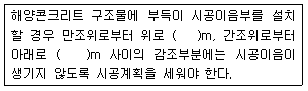
- 0.2
- 0.4
- 0.6
- 0.8
(정답률: 67%)
52. 아래 표와 같은 경우 콘크리트의 강도는 재령 몇 일의 압축강도 시험값을 기준으로 하는가?
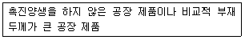
- 7일
- 14일
- 28일
- 91일
(정답률: 56%)
53. 숏크리트 시공에 대한 일반적인 설명으로 틀린 것은?
- 숏크리트는 타설되는 장소의 대기 온도가 30°C 이상이 되면 건식 및 습식 숏크리트 모두 뿜어붙이기를 할 수 없다.
- 숏크리트는 대기 온도가 10°C 이상일 때 뿜어붙이기를 실시하며, 그 이하의 온도일 때는 적절한 온도대책을 세운 후 실시한다.
- 건식 숏크리트는 배치 후 45분 이내에 뿜어붙이기를 실시하여야 한다.
- 습식 숏크리트는 배치 후 60분 이내에 뿜어붙이기를 실시하여야 한다.
(정답률: 73%)
54. 경량골재콘크리트의 장점으로 적합하지 않은 것은?
- 자중이 가벼워서 구조체 부재의 치수를 줄일 수 있다.
- 열전도율 및 선팽창률이 작다.
- 건조수축과 수중팽창이 작다.
- 질량이 작아 콘크리트의 운반과 타설이 용이하다.
(정답률: 39%)
55. 매스 콘크리트에서 철근이 배치된 일반적인 구조물 중 균열 발생을 제한할 경우 표준적인 온도균열지수의 값으로 옳은 것은?
- 1.5~2.3
- 1.2~1.5
- 0.7~1.2
- 0.3~0.7
(정답률: 71%)
56. 고강도 콘크리트에 대한 설명으로 틀린 것은?
- 설계기준 압축강도가 보통(중량) 콘크리트에서 40MPa 이상인 콘크리트를 고강도 콘크리트라 한다.
- 설계기준 압축강도가 경량골재 콘크리트에서 27MPa 이상인 콘크리트를 고강도 콘크리트라 한다.
- 고강도 콘크리트에 사용되는 굵은 골재의 최대 치수는 40mm 이하로서 가능한 25mm 이하로 한다.
- 콘크리트의 수밀성을 높이기 위하여 공기연행제를 사용하는 것을 원칙으로 한다.
(정답률: 73%)
57. 댐 콘크리트 중 롤러다짐 콘크리트 반죽질기의 표준값으로 옳은 것은? (단, VC시험을 실시한 경우)
- 1⑤초
- 2010초
- 3015초
- 4020초
(정답률: 70%)
58. 콘크리트의 타설에 관한 설명으로 옳지 않은 것은?
- 원칙적으로 시공계획서를 따른다.
- 한 구획내의 콘크리트는 타설이 완료될 때까지 연속해서 타설한다.
- 타설한 콘크리트는 거푸집 안에서 횡방향으로 이동시켜서는 안된다.
- 2층 이상으로 나누어 타설할 경우, 상층의 콘크리트는 하층의 콘크리트가 경화한 다음 타설한다.
(정답률: 76%)
59. 포장콘크리트의 인력포설 후 다짐에 대한 설명으로 옳은 것은?
- 거푸집 및 이음 부근은 봉다짐 진동기를 사용하여야 한다.
- 다질 수 있는 1층 두께는 200mm 이하로 하여야 한다.
- 혼합물의 다짐은 포설 후 1시간 30분 이내에 완료하여야 한다.
- 진동기는 한자리에서 30초 이상 다짐하여야 한다.
(정답률: 34%)
60. 콘크리트를 2층 이상으로 나누어 타설할 경우 각 층의 콘크리트가 일체화 되도록 아래층 콘크리트가 경화되기 전에 위층 콘크리트를 쳐야 한다. 외기온도가 25°C 이하인 경우 허용 이어치기 시간간격 표준은?
- 1시간
- 1.5시간
- 2시간
- 2.5시간
(정답률: 50%)
4과목: 콘크리트 구조 및 유지관리
61. 내동해성이 작은 골재를 콘크리트에 사용하는 경우 동결융해작용에 의해 골재가 팽창하여 파괴되어 떨어져 나가거나 그 위치의 콘크리트 표면이 떨어져 나가는 현상을 무엇이라 하는가?
- 침식
- 백화
- 스케일링
- 팝아웃
(정답률: 79%)
62. 콘크리트 보수를 위해 각종 섬유를 사용할 경우 섬유가 갖추어야 할 조건으로 맞지 않는 것은?
- 작업에서 시공성이 우수해야 한다.
- 섬유의 인성과 연성이 풍부해야 한다.
- 섬유의 압축강도가 커야 한다.
- 섬유의 결합재의 부착이 좋아야 한다.
(정답률: 76%)
63. 강도설계법에 의해 설계된 폭 300mm, 유효깊이 500mm인 직사각형보에서 콘크리트가 부담하는 전단강도(Vc)는? (단, fck=28MPa이다.)
- 132.3kN
- 168.9kN
- 204.5kN
- 268.2kN
(정답률: 56%)
64. 기본 정착길이의 계산값이 650mm이고, 고려해야 할 보정계수가 1.3인 부재에서 인장 이형철근의 소요 정착길이는?
- 500mm
- 627mm
- 845mm
- 942mm
(정답률: 56%)
65. 콘크리트 구조물의 보수공법 중 에폭시계 수지 주입공법의 효과에 대한 설명으로 틀린 것은?
- 에폭시 수지재의 탄성계수가 일반콘크리트에 비해 일반적으로 상당히 높아서 구조물의 직접적인 내력증진 효과가 있다.
- 콘크리트 균열부분을 수지로 채움으로서 콘크리트 바닥판의 수밀성을 증대시킨다.
- 콘크리트 및 철근의 열화를 방지한다.
- 균열부의 수지주입은 보강과 병용하면 보다 효과적이다.
(정답률: 54%)
66. 콘크리트내의 철근은 외부로부터 염화물 침투에 의해서 부식할 수 있다. 다음 중 철근의 부식에 미치는 영향이 가장 적은 것은?
- 콘크리트에 침투하는 염화물의 양
- 콘크리트의 침투성
- 콘크리트의 설계기준강도
- 습기와 산소의 양
(정답률: 78%)
67. 아래 그림과 같은 단철근 직사각형보의 등가 응력사각형의 깊이(a)는? (단, fck=28MPa, fy=400MPa)
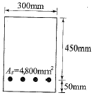
- 252.3mm
- 268.9mm
- 275.4mm
- 284.7mm
(정답률: 72%)
68. 아래 그림과 같은 단면을 가지는 단순보에서 지속하중에 의해 생긴 순간처짐이 25mm이었다. 5년이 경과한 후의 총 처짐량은?
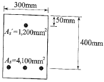
- 58.3mm
- 51.2mm
- 47.8mm
- 42.4mm
(정답률: 35%)
69. 단철근 직사각형보에서 fy=400MPa, 유효깊이는 700mm일 때 압축연단에서 중립축까지의 거리(c)는? (단, 강도설계법으로 균형단면으로 계산할 것)
- 400mm
- 420mm
- 434mm
- 472mm
(정답률: 73%)
70. 중성화 속도계수가 9mm/√년 인 콘크리트 구조물이 16년 경과한 시점의 중성화 깊이는? (단, 예측식의 변동성을 고려한 안전계수는 1로 가정한다.)
- 12mm
- 36mm
- 48mm
- 144mm
(정답률: 85%)
71. 길이 6m의 단순 철근콘크리트보에서 처짐을 계산하지 않아도 되는 보의 최소두께는 얼마인가? (단, fck=24MPa, fy=400MPa)
- 375mm
- 324mm
- 300mm
- 250mm
(정답률: 18%)
72. 알칼리 골재반응이 일어나기 위해서는 일반적으로 반응의 3조건이 충족되어야 한다. 여기에 해당하지 않는 것은?
- 골재 중의 유해 물질
- 대기 중의 이산화탄소
- 시멘트 중의 알칼리
- 반응을 촉진하는 수분
(정답률: 60%)
73. 콘크리트 구조물에 0.1mm 정도의 미세한 균열이 발생한 경우 내구성이 저하하게 된다. 따라서 구조물의 방수성 및 내구성을 향상시키기 위해 균열 발생 부위에 도막을 형성하여 보수하는 공법은?
- 라이닝공법
- 재알칼리화공법
- 강판접착공법
- 표면처리공법
(정답률: 87%)
74. 콘크리트 구조물의 압축강도를 조사하는 방법으로 거리가 먼 것은?
- 반발경도법
- 초음파속도법
- 자연전위법
- 인발법
(정답률: 64%)
75. 강도설계법의 기본가정에 대한 설명 중 옳지 않은 것은?
- 철근 및 콘크리트의 변형률은 중립축으로부터 거리에 비례한다.
- 압축측 연단에서 콘크리트의 최대변형률은 0.003으로 가정한다.
- 항복강도 fy이내에서 철근의 응력은 그 변형률의 E8배로 본다.
- 콘크리트의 인장강도는 휨계산에서 0.25√Fck로 계산한다.
(정답률: 60%)
76. 압축부재의 축방향 주철근의 최소 개수에 대한 설명으로 틀린 것은?
- 사각형 띠철근으로 둘러싸인 경우 4개
- 원형 띠철근으로 둘러싸인 경우 5개
- 삼각형 띠철근으로 둘러싸인 경우 3개
- 나선철근으로 둘러싸인 경우 6개
(정답률: 77%)
77. 현행 콘크리트 구조설계기준에서 고정하중(D)과 활하중(L)이 작용하는 경우의 하중조합으로 옳은 것은?
- 1.4(D+L)
- 0.75(1.4D+1.7L)
- 1.4D+1.7L
- 1.2D+1.6L
(정답률: 70%)
78. 옹벽의 전도에 대한 안정조건으로 옳은 것은?
- 전도휨모멘트는 저항휨모멘트의 2.0배 이상이어야 한다.
- 저항휨모멘트는 전도휨모멘트의 2.0배 이상이어야 한다.
- 전도휨모멘트는 저항휨모멘트의 1.5배 이상이어야 한다.
- 전도휨모멘트는 전도휨모멘트의 1.5배 이상이어야 한다.
(정답률: 44%)
79. 다음 중 경화 후 발생하는 콘크리트 균열발생 유형이 아닌 것은?
- 소성수축 및 침하
- 동결융해의 반복
- 알카리 골재반응
- 탄산화
(정답률: 65%)
80. 섬유보강 접착공법에 사용하는 보강 재료로써 가장 부적합한 것은?
- 탄소섬유
- 유리섬유
- 아라미드섬유
- 폴리에스테르 섬유
(정답률: 60%)